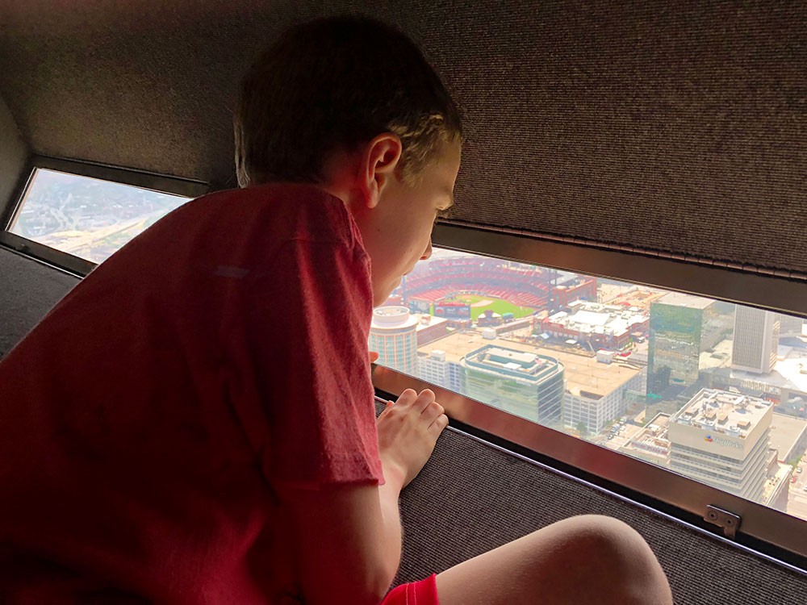
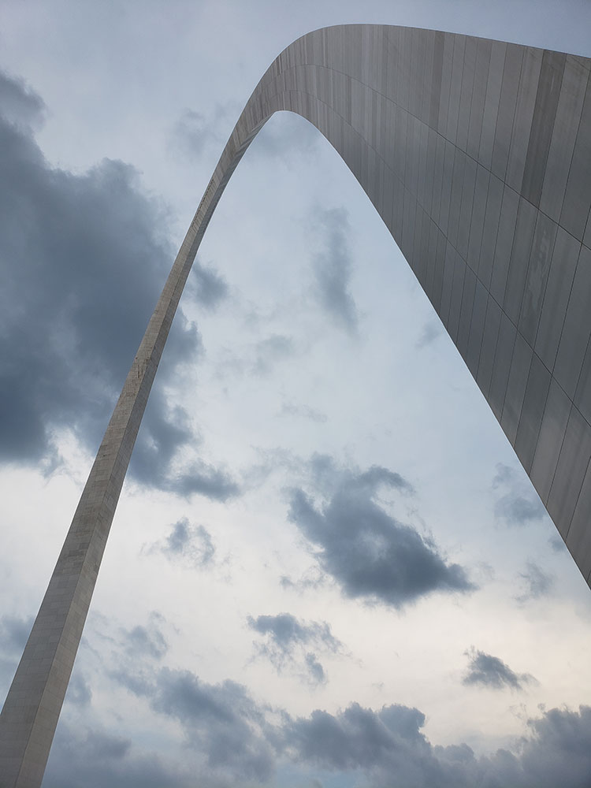
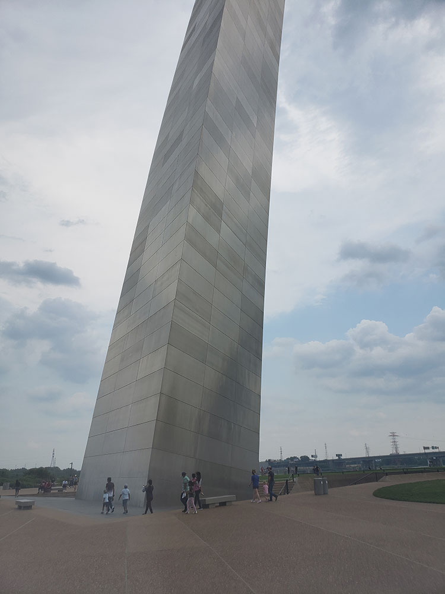
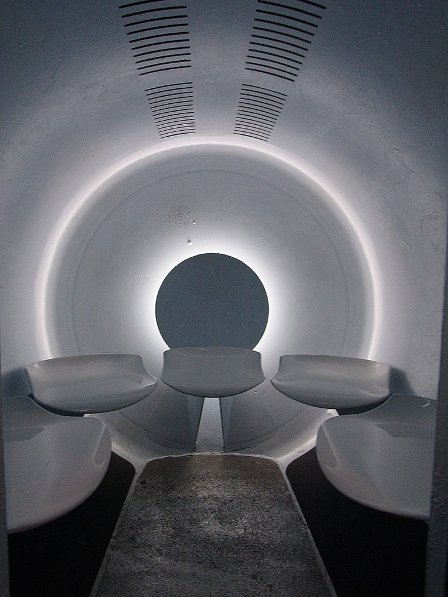
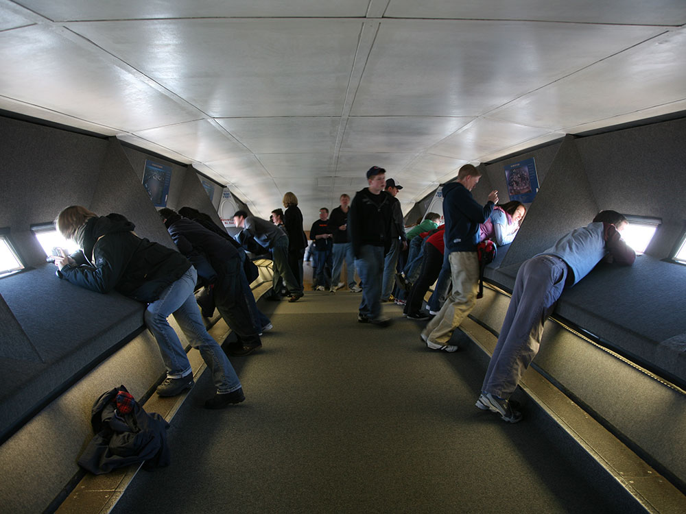

630-foot (192 m) monument in St. Louis, Missouri, clad in stainless steel, is the world's tallest arch, the tallest man-made monument in the Western Hemisphere, and Missouri's tallest accessible building
General Information
Tram ride schedules vary by season and availability
Tram rides and special exhibits require paid tickets
Children under age 3: Free for tram rides
How to Get There
From St. Louis (1 mi): Take I-44 east into downtown and follow Memorial Drive north along the riverfront to reach the monument and visitor center entrance.
Overview
The Gateway Arch is a 630-foot (192 m) monument in St. Louis, Missouri. Clad in stainless steel and built in the form of a weighted catenary arch, it is the world's tallest arch, the tallest man-made monument in the Western Hemisphere, and Missouri's tallest accessible building. Built as a monument to the westward expansion of the United States, and officially dedicated to "the American people," the Arch, commonly referred to as "The Gateway to the West" is the centerpiece of Gateway Arch National Park and has become an internationally recognized symbol of St. Louis, as well as a popular tourist destination.
The Arch was designed by Finnish-American architect Eero Saarinen in 1947; construction began on February 12, 1963 and was completed on October 28, 1965. The monument opened to the public on June 10, 1967. It is located at the site of St. Louis's founding on the west bank of the Mississippi River.
Both the width and height of the arch are 630 feet (192 m). The arch is the tallest memorial in the United States and the tallest stainless steel monument in the world.
The cross-sections of the arch's legs are equilateral triangles, narrowing from 54 feet (16 m) per side at the bases to 17 feet (5.2 m) per side at the top. Each wall consists of a stainless steel skin covering a sandwich of two carbon-steel walls with reinforced concrete in the middle from ground level to 300 feet (91 m), with carbon steel to the peak. The arch is hollow to accommodate a unique tram system that takes visitors to an observation deck at the top.
The first proposal to illuminate the arch at night was announced on May 18, 1966, but the plan never came to fruition. In July 1998, funding for an arch lighting system was approved by St. Louis's Gateway Foundation, which agreed to take responsibility for the cost of the equipment, its installation, and its upkeep. Since November 2001, the arch has been bathed in white light between 10 p.m. and 1 a.m. via a system of floodlights. Designed by Randy Burkett, it comprises 44 lighting fixtures situated in four pits just below ground level.
The underground visitor center for the arch was designed as part of the National Park Service's Mission 66 program. The 70,000-square-foot (6,500 m2) center is located directly below the arch, between its legs.
The center houses offices, mechanical rooms, and waiting areas for the arch trams, as well as its main attractions: the Museum of Westward Expansion and two theaters displaying films about the arch. The museum houses several hundred exhibits about the United States' westward expansion in the 19th century and opened on August 10, 1977.
Near the top of the Arch, passengers exit the tram compartment and climb a slight grade to enter the observation area. This arched deck, which is over 65 feet (20 m) long and 7 feet (2.1 m) wide, can hold up to about 160 people, equivalent to the number of people from four trams. Sixteen windows per side, each measuring 7 by 27 inches (180 mm x 690 mm), offer views up to 30 miles (48 km) to the east across the Mississippi River and southern Illinois with its prominent Mississippian culture mounds at Cahokia Mounds and to the west over the city of St. Louis and St. Louis County beyond.
There are three modes of transportation up the arch: two sets of 1,076-step emergency stairs (one per leg), a 12-passenger elevator to the 372-foot (113 m) height, and a tram in each leg.
Each tram is a chain of eight cylindrical, five-seat compartments with a small window on the doors. As each tram has a capacity of 40 passengers and there are two trams, 80 passengers can be transported at one time, with trams departing from the ground every 10 minutes. The cars swing like Ferris-wheel cars as they ascend and descend the arch. This fashion of movement gave rise to the idea of the tram as "half-Ferris wheel and half-elevator." The trip to the top takes four minutes, and the trip down takes three minutes.
Overview
The Gateway Arch is the centerpiece of Gateway Arch National Park in St. Louis, Missouri, and at 630 feet tall is the tallest monument in the United States. The primary visitor experience is the famous Tram Ride to the Top, which transports visitors inside the Arch to an observation deck offering panoramic views of St. Louis, the Mississippi River, and eastern Illinois.
The observation area sits 630 feet above the city and features 16 windows facing east and 16 windows facing west. On clear days, visitors can see up to 30 miles in both directions.
Do You Need Reservations?
| Question | Answer |
|---|---|
| Can you visit the top of the Arch? | Yes, via the Tram Ride to the Top. |
| Are tickets required? | Yes. |
| Should tickets be purchased in advance? | Strongly recommended. |
| Do tickets sell out? | Frequently, especially during peak travel periods. |
The National Park Service and Gateway Arch operators strongly recommend purchasing tickets ahead of time because tram rides often sell out early. Same-day tickets may be available, but availability is not guaranteed.
Tram Ride Experience
| Feature | Details |
|---|---|
| Total Experience | Approximately 45–60 minutes. |
| Ride Height | 630 feet above St. Louis. |
| Ride Time | About 4 minutes each way. |
| Observation Time | Typically up to 10 minutes at the top. |
| Views | Up to 30 miles east and west on clear days. |
Visitors begin with pre-boarding exhibits and a short orientation before boarding one of the Arch's unique rotating tram capsules. The ride itself travels inside the Arch structure and is unlike any elevator system in the world.
The Unique Tram System
The Gateway Arch tram is a one-of-a-kind transportation system specifically designed for the monument's curved shape. Each tram contains eight rotating capsules, with five seats per capsule. During the ascent, the capsules slowly pivot approximately 155 degrees, keeping passengers upright while traveling through the Arch's curved legs.
| Tram Fact | Details |
|---|---|
| Passengers Per Capsule | 5 |
| Capsules Per Tram | 8 |
| Total Passengers Per Tram | 40 |
| Ride Speed | Approximately 3.86 mph |
| First Operation | July 24, 1967 |
Ticket Pricing
| Ticket Type | Typical Price |
|---|---|
| Adult (16+) | Approximately $15–$19 |
| Child (3–15) | Approximately $11–$15 |
| National Park Pass Holder | Approximately $12–$16 |
| Infant (2 and Under) | Free |
Prices vary by date and season, and combination packages are available that include riverboat cruises, films, and virtual reality experiences.
Accessibility & Important Considerations
- Security screening is required before entering the Arch.
- No restrooms are available at the top.
- No seating is available at the observation deck.
- The observation deck is not fully wheelchair accessible.
- Visitors may need to manage multiple flights of stairs during the experience.
Best Time to Visit
| Time | Advantages |
|---|---|
| Morning | Smaller crowds and clearer visibility. |
| Late Afternoon | Excellent city lighting and Mississippi River views. |
| Sunset | Most scenic views and photography opportunities. |
Best Experience for First-Time Visitors
For most first-time visitors, the ideal itinerary combines a Tram Ride to the Top with exploration of the excellent free Gateway Arch Museum beneath the monument. Those with more time may also add a Mississippi River cruise for a fuller experience of St. Louis and the riverfront. The tram ride remains the signature attraction and one of the most unique observation deck experiences in the National Park System.
Information in this article is based on visitor information, ticketing details, accessibility guidance, and tram ride descriptions provided by the Gateway Arch Tram Ride to the Top page, the Gateway Arch Ticket Center, and the National Park Service pages covering the View From the Top Experience and the Gateway Arch Tram System. The information includes reservation requirements, tram ride operations, observation deck access, accessibility considerations, and visitor planning guidance.
This article uses material from the Wikipedia article "Gateway Arch", which is released under the Creative Commons Attribution-Share-Alike License 3.0






